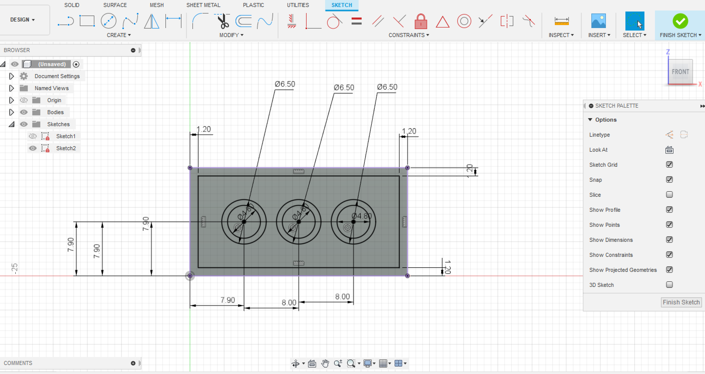
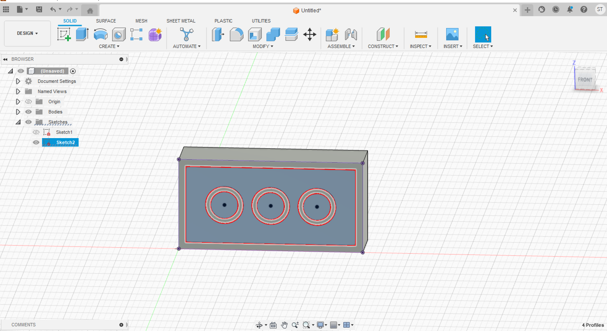
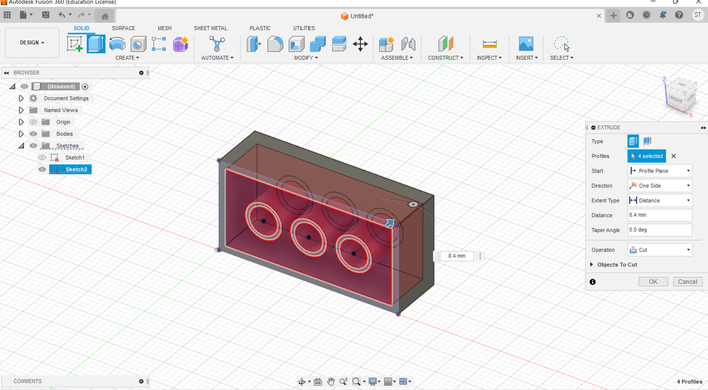
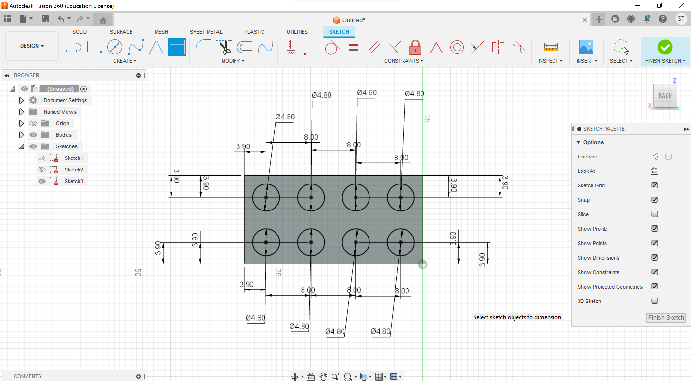
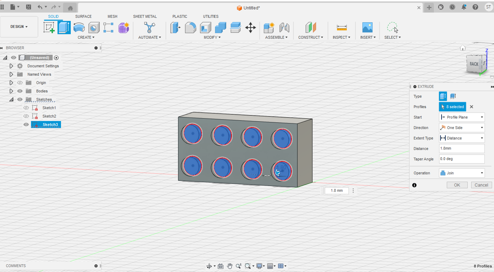
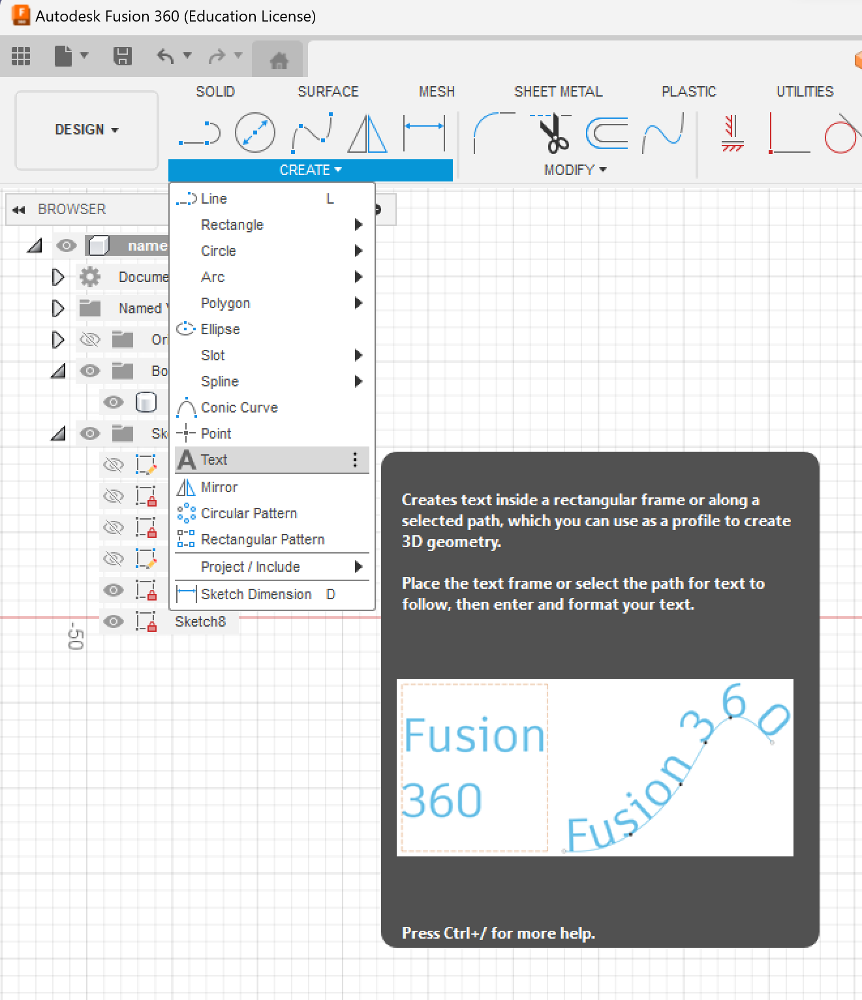
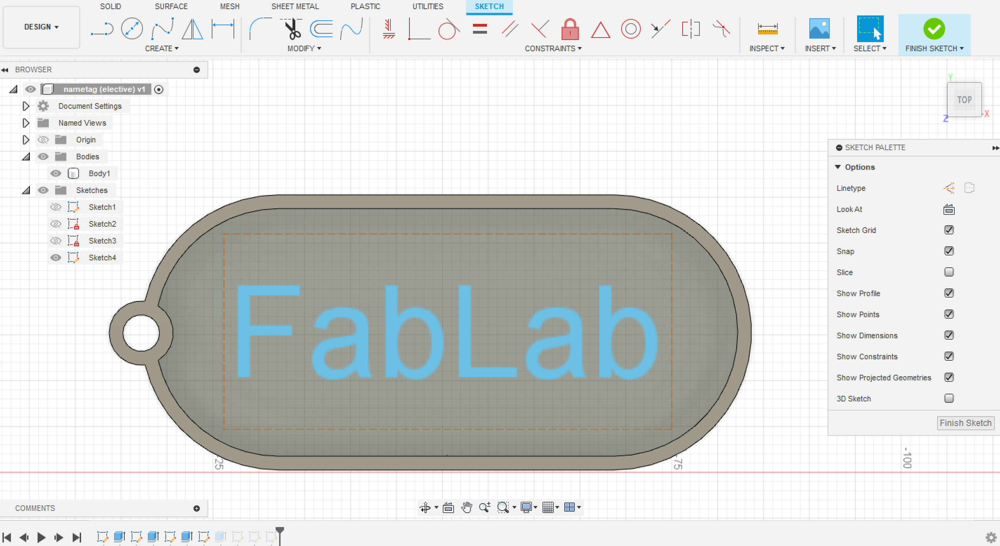
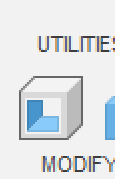
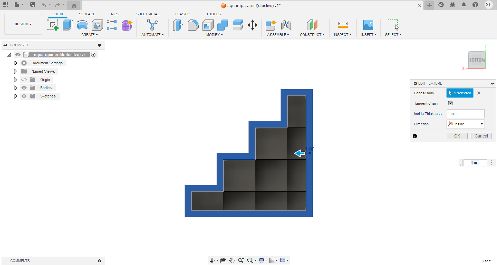
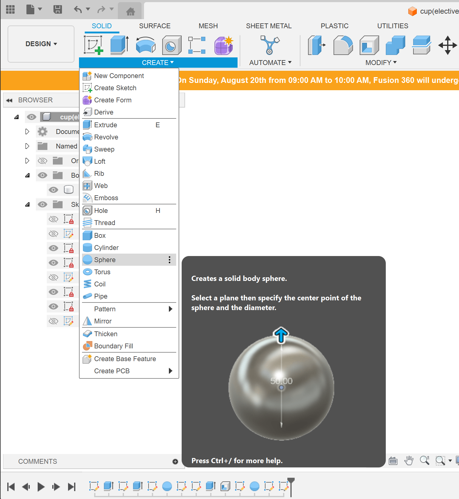

To cut



To join


You can also create text on your object too.(exercise 6/9)
When in sketch choose text (follow image below)

And then choose how big u want the letter to be

Once you are done you can join and create it.
Shell is a function found bellow, it is use to make object hollow.(exercise 7)

All you need to do is to select a object and set how thick do you want the wall of the object to be.

(Exercise 8) Mug
This require you to create a curve bottom
Create a clyinder before using a sphere function to cut will do the trick.(it works exactly like extrude)
